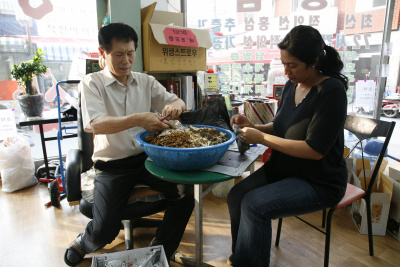
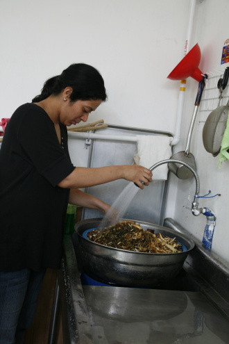
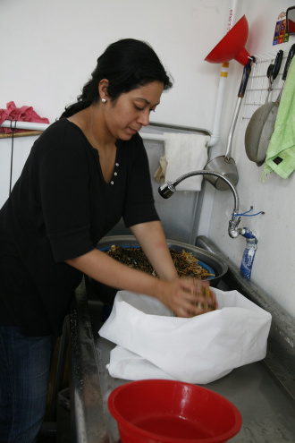
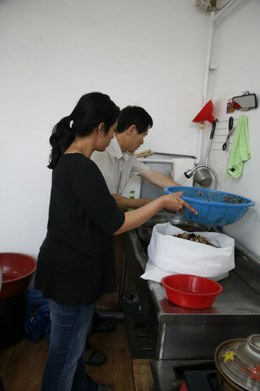

Alicia's work
   
2009-09-10
sap2009.egloos.com 에서 옮김
Revealing Myth : Seoksu Market
All my life I have been plighted with remembering the most benign and obscure information from my life. Many times they come as flashbacks when I am about to go to sleep or in between projects. Before starting my artist residency in Anyang South Korea, I found myself contacting people I knew 13 years ago when I was an English teacher in Seoul. A part of me knew that this attempt would be fruitless, but I had an urge to engage my memory in a phantom cat and mouse game. While reviewing the faces I knew, I remembered little instances in my life. These visions, cascading in my mind, defined what my two years in Korea were all about and they were attempting to outline what my two month residency might be like. As I traveled down a virtual memory lane, I began to wonder what returning to all these past events and people in my life meant. Was I going to project them onto my new experiences reprogramming the identity of my residency's place into what my memories were showing me?
I tried to remember what Korea was like- its sounds, smells, views, and flavors. The generosity of the people but also their caution and curiosity with visitors. After centuries of invasion from countries like Japan and China, and the US military presence after the Korea War, Korea was still getting used to the idea of foreigners living and moving through its ancient spaces. Most foreigners in Korea were US soldiers stationed at Yongsan and Ansan bases or native English language teachers from around the world. Coming from New York City, living in Seoul was not such a culture shock like it was for some of my fellow teachers who had come from small towns, where the most exotic things were Chinese restaurants or a Jewish friend. It often felt to me like any other part of New York City: Fast paced, teeming with energy and the unexpected.
When I arrived to Seoul, it was pretty obvious to me that much had changed. In 1997, Korea was facing a major economic collapse, as some of the wealthiest companies in the country were going bankrupt. It was devastating for the people whose pride was reflected in the amount consumed and displayed for the upcoming world cup championships in 2002. Returning this time around, most foreigners I have stopped to ask for directions were from anywhere but English speaking countries. The melange of occidental, oriental, and contemporary themes in architecture is bigger. The growth of Korean artist institutions and visibility of artists is astonishing. It seems that after the world cup, many surfaced as international attention focused more on Korea. President Noh, who sadly committed suicide in a dramatic plea to ultra-conservative groups to leave his family alone, supported the arts and invested time and money in making Korea a viable place for artists and their communities. The abundance of galleries runs the gamut- from the glitziest to the most Utopian to the ever dependable tourist-trap. All are scattered throughout Seoul making it impossible to visit galleries in a week let alone a day. The 2002 football world cup, in combination with the wide use of the internet, has created a spotlight on the Korean art scene reflecting a resurrection of the Korean economy, displaying a much more dramatic impact than the what the 1988 Olympic games left behind.
신화를 드러내기 : 석수시장
가장 즐겁고도 어렴풋한 기억을 떠올리는 건 평생 동안 참으로 어려운 일이었다. 대부분의 경우 그런 기억은 한 프로젝트를 마치고 다음 프로젝트에 착수하기 전, 잠자리에 들기 전에 머리 속에 스치고 지나가는 게 전부였다. 한국 안양에서 예술가 국제 레지던시 프로그램에 참여하기 전, 나는 13년 전에 한국에서 영어 교사를 하던 당시 알고 지내던 사람들과 다시 연락을 취하려 하는 내 자신을 발견했다. 물론 마음 속 한 구석에는 쓸데없는 시도를 하고 있다는 생각도 들었지만, 나는 서로 쫓고 쫓기는 고양이와 쥐처럼 잡힐 듯 하다가도 도무지 잡히지 않는 기억을 떠올리려 애썼다. 그리고 내가 알고 지냈던 얼굴들을 찬찬히 떠올려보며, 내 인생에 일어났던 사소한 사건들을 하나 둘씩 기억해냈다. 과거의 잔영은 마음속에서 폭포수처럼 쏟아져 내리며 한국에 머물렀던 2년간의 삶이 무엇이었는지 확실히 말해주었고, 또 앞으로 두 달 동안 어떤 삶이 펼쳐질지도 그려보게 했다. 기억을 더듬어가며 나는 이처럼 과거의 사건들과 사람들을 다시금 떠올리는 것이 도대체 무엇인지 궁금했다. 그 때의 일들을 앞으로의 새로운 경험에 투영시켜보려 했던 것일까? 그러면서 기억이 보여주는 영상을 통해 앞으로 머물게 될 곳의 정체성을 재 프로그래밍하려 한 것일까?
나는 그 당시 한국의 모습을 떠올리려 애썼다. 한국의 소리, 냄새, 풍경, 풍취 모두. 사람들의 훈훈한 정과 그 뒤에 숨겨져 있던 낯선 이에 대한 경계심과 호기심까지. 수 세기 동안 계속된 일본, 중국과 같은 타국의 침략에서부터 한국 전쟁 이후의 미군 주둔까지 경험한 한국은 아직 그들의 옛 터전을 오가며 생활하는 외국인들에게 익숙해져 가는 중이었다. 한국에 거주하는 대다수 외국인들은 용산과 안산 기지에 주둔하는 미군이거나 전세계에서 모여든 영어 교사였다. 뉴욕에서 건너온 나에게는 서울에서의 생활이 그다지 문화적 충격으로 다가오지 않았지만, 가장 이국적인 것이라고는 중국 식당과 유대인 친구뿐인 조그만 마을에서 온 동료 교사들에게는 충격이었다. 사실 내게는 가끔 서울이 뉴욕의 어느 한 동네처럼 느껴지기도 했다. 빠르게 변화하고 있는 도시이자, 예기치 않은 사건과 에너지가 넘치는 곳이었기 때문이다.
서울에 도착하자, 많은 변화가 일어났다는 걸 한눈에 알아볼 수 있었다. 1997년에는 한국에 금융위기가 찾아왔고, 한국의 초일류 대기업들 중 몇몇은 파산직전이었다. 이 시기는2002년 한일 월드컵에서 볼 수 있었던 것처럼 자부심에 가득한 한국인들에게는 끔찍했던 시기였다. 그리고 몇 년의 세월이 흘러 한국에 다시 오니, 멈춰 세워 길을 물은 외국인들은 대부분 영어권을 제외한 나라에서 온 사람들이었다. 건축에서는 동서양과 현대적 건축양식이 더욱 복합적으로 나타나고 있었다. 한국 예술가 제도의 성장과 작가들의 입지가 커진 점 또한 놀라웠다. 월드컵이 끝나고 한국에 대한 세계의 관심이 커지면서 많은 부분들이 수면위로 떠오른 것이 아닌가 하는 생각이다. 최근 노무현 전대통령이 수사를 받으며 극 보수 세력들에게 가족들을 내버려둬달라고 애원하며 스스로 목숨을 끊은 사건이 있었는데, 그는 예술에 대한 지원을 아끼지 않았고 한국을 예술가 및 예술가 집단이 성장할 수 있는 곳으로 만들기 위해 시간과 자금을 투자했다. 눈부시게 화려한 곳부터, 비현실적인 유토피아적 공간, 관광객에게 바가지를 씌우는 곳까지 각양각색의 수 많은 갤러리가 지천에 널려있다. 서울 전체에 흩어진 이 수많은 갤러리들을 하루는 고사하고 일주일 안에 다 둘러보는 것조차 불가능할 정도이다. 2002년 한일 월드컵은 높은 인터넷 사용률과 맞물려 세계를 한국 예술계에 주목하게 만들었다. 한일 월드컵은 한국 경제의 부활을 반영함과 동시에 1988년 서울 올림픽보다 훨씬 더 극적이고 강력한 효과를 남겼다.
한국에서의 지난 2개월은 내게 특별한 시간이었다. 마치 제2의 고향으로 다시 돌아온 느낌이었다. 처음 한국에 온 건 잠시 예술에서 떠나 쉬면서 내면의 목소리를 찾기 위한 시간을 보내기 위해서였다. 하지만 이제는 예술을 하러 다시 이곳에 왔다. 내가 사랑하는 일을 하면서 예술이 어떻게 변화와 연결의 촉매제가 될 수 있는지에 대한 가능성을 끊임없이 모색하고자 온 것이다. 나는 한국에서 실현한 내 프로젝트가 자랑스럽고, 이를 가능하게 해준 모든 사람들에게 감사하고 싶다. 누군가 두 번째로 한국에서 생활하면서 가장 좋았던 기억이 무엇이냐고 물은 적이 있다. 솔직히 그 질문에는 아직 대답할 수 없다. 이 글을 쓰고 있는 지금 여전히 한국에 머물고 있는 중이고, 아직 이곳의 경험을 추억이라고 말할 수 없기 때문이다. 어쩌면 사람들, 프로젝트, 열기, 혹은 음식이 기억 날는지도 모르겠다. 아니면 이 모든 추억들이 “가장 좋았던 기억”이라 불러달라고 서로 아우성칠지도 모른다. 한국에 대한 기억을 한 가지로 정의하기란 불가능하다. 그건 한국의 가능성을 박탈해 버리는 것이 아닐까 하는 생각이다. 앞으로 어떤 일들이 추억으로 다가올지 기대가 된다.
seoksuartproject.blogspot.com 에서 옮김